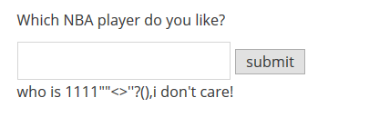
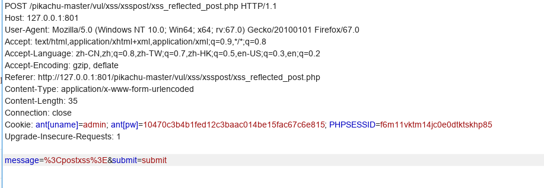

xss跨站脚本攻击
1.简介
跨站脚本（cross site script）为了避免与样式css混淆，所以简称为XSS。
XSS是一种经常出现在web应用中的计算机安全漏洞，也是web中最主流的攻击方式。那么什么是XSS呢？
XSS是指恶意攻击者利用网站没有对用户提交数据进行转义处理或者过滤不足的缺点，进而添加一些代码，嵌入到web页面中去。使别的用户访问都会执行相应的嵌入代码。
从而盗取用户资料、利用用户身份进行某种动作或者对访问者进行病毒侵害的一种攻击方式。
XSS攻击的危害包括：
1、盗取各类用户帐号，如机器登录帐号、用户网银帐号、各类管理员帐号
2、控制企业数据，包括读取、篡改、添加、删除企业敏感数据的能力
3、盗窃企业重要的具有商业价值的资料
4、非法转账
5、强制发送电子邮件
6、网站挂马
7、控制受害者机器向其它网站发起攻击
2.原因解析
主要原因：过于信任客户端提交的数据！
解决办法：不信任任何客户端提交的数据，只要是客户端提交的数据就应该先进行相应的过滤处理然后方可进行下一步的操作。
进一步分析细节：
客户端提交的数据本来就是应用所需要的，但是恶意攻击者利用网站对客户端提交数据的信任，在数据中插入一些符号以及javascript代码，那么这些数据将会成为应用代码中的一部分了。那么攻击者就可以肆无忌惮地展开攻击啦。
因此我们绝不可以信任任何客户端提交的数据！！！
3.xss分类
一般XSS可以分为如下几种常见类型：
1.反射性XSS: 经过后端，不经过数据库
2.存储型XSS: 经过后端，经过数据库
3.DOM型XSS: 不经过后端,DOM—based XSS漏洞是基于文档对象模型Document Objeet Model,DOM)的一种漏洞,dom - xss是通过url传入参数去控制触发的。
3.1反射型xss:
又称为非持久性跨站点脚本攻击，它是最常见的类型的XSS。漏洞产生的原因是攻击者注入的数据反映在响应中。非持久型xss攻击是一次性的，仅对当次的页面访问产生影响。非持久型xss攻击要求用户访问一个被攻击者篡改后的链接，用户访问该链接时，被植入的攻击脚本被用户游览器执行，从而达到攻击目的。
3.1.1get请求下的xss
1.测试输入特殊字符

2.查看网页源代码
1 | </form> |
3.写payload
猜测是该网站是直接将输入的内容显示到who is后边，所以可以直接写javascript脚本
比如1
<script>alert("xss")</script>
提交时发现了一点问题
即已经做了防xss的措施，只不过是在前端完成的，简单修改一下maxlength的值就好啦~
输入后浏览器弹出xss对话框，达成预期目标
攻击时直接发送链接就好了
http://127.0.0.1:801/pikachu-master/vul/xss/xss_reflected_get.php?message=%3Cscript%3Ealert%28%22xss%22%29%3C%2Fscript%3E&submit=submit
接收者接收消息显示的时候将会弹出警告窗口
3.1.2post请求的xss
输入内容通过post表单提交
burp抓包分析

URL中没有要提交的信息，所以不能直接通过发送链接攻击。
反射型 XSS 的数据流向是：浏览器 -> 后端 -> 浏览器。
3.2存储型xss
后台源码：1
2
3
4
5
6
7
8
9
10$link=connect();
$html='';
if(array_key_exists("message",$_POST) && $_POST['message']!=null){
$message=escape($link, $_POST['message']);
$query="insert into message(content,time) values('$message',now())";
$result=execute($link, $query);
if(mysqli_affected_rows($link)!=1){
$html.="<p>数据库出现异常，提交失败！</p>";
}
}
用户输入的内容还是没有过滤，但是不直接显示在页面中，而是插入到了数据库。
1 | <?php echo $html; |
再由php代码输出到前端
存储型xss，又称为持久型跨站点脚本，它一般发生在XSS攻击向量(一般指XSS攻击代码)存储在网站数据库，当一个页面被用户打开的时候执行。每当用户打开浏览器,脚本执行。持久的XSS相比非持久性XSS攻击危害性更大,因为每当用户打开页面，查看内容时脚本将自动执行。
存储型 XSS 的数据流向是：浏览器 -> 后端 -> 数据库 -> 后端 -> 浏览器。
3.3 DOM型xss
部分代码：1
2
3
4
5
6
7
8
9
10
11
12
13
14
15
16
17 <div class="page-content">
<div id="xssd_main">
<script>
function domxss(){
var str = document.getElementById("text").value;
document.getElementById("dom").innerHTML = "<a href='"+str+"'>what do you see?</a>";
}
//试试：'><img src="#" onmouseover="alert('xss')">
//试试：' onclick="alert('xss')">,闭合掉就行
</script>
<!--<a href="" onclick=('xss')>-->
<input id="text" name="text" type="text" value="" />
<input id="button" type="button" value="click me!" onclick="domxss()" />
<div id="dom"></div>
</div>
</div><!-- /.page-content -->
直接利用dom方法:1
2var str = document.getElementById("text").value;
document.getElementById("dom").innerHTML = "<a href='"+str+"'>what do you see?</a>";
创建JS把前端输入直接输出到前端。
即数据流向是从URL->浏览器。
payload
‘ onclick=”alert(‘xss’)”>把a标签的href属性闭合掉就行